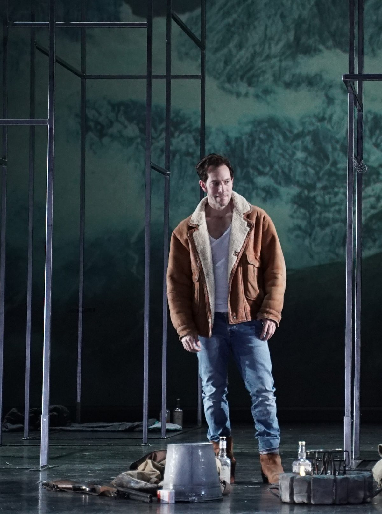
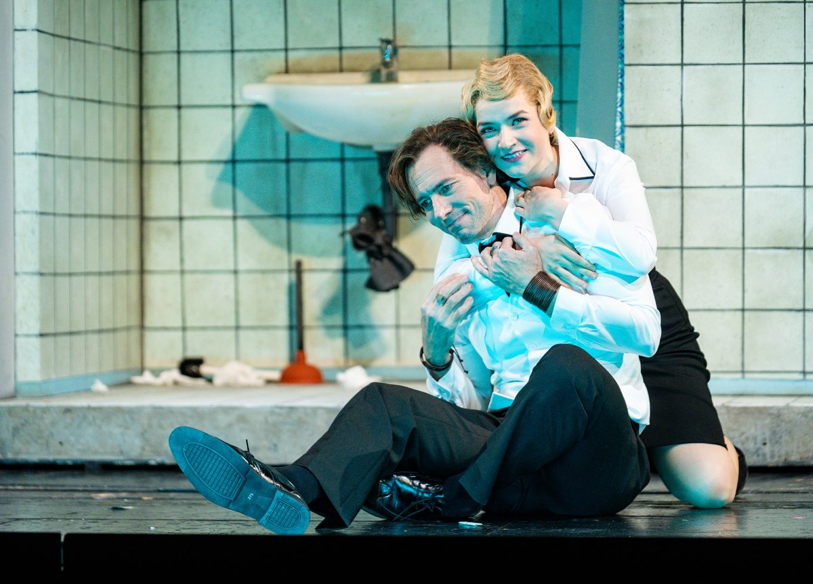
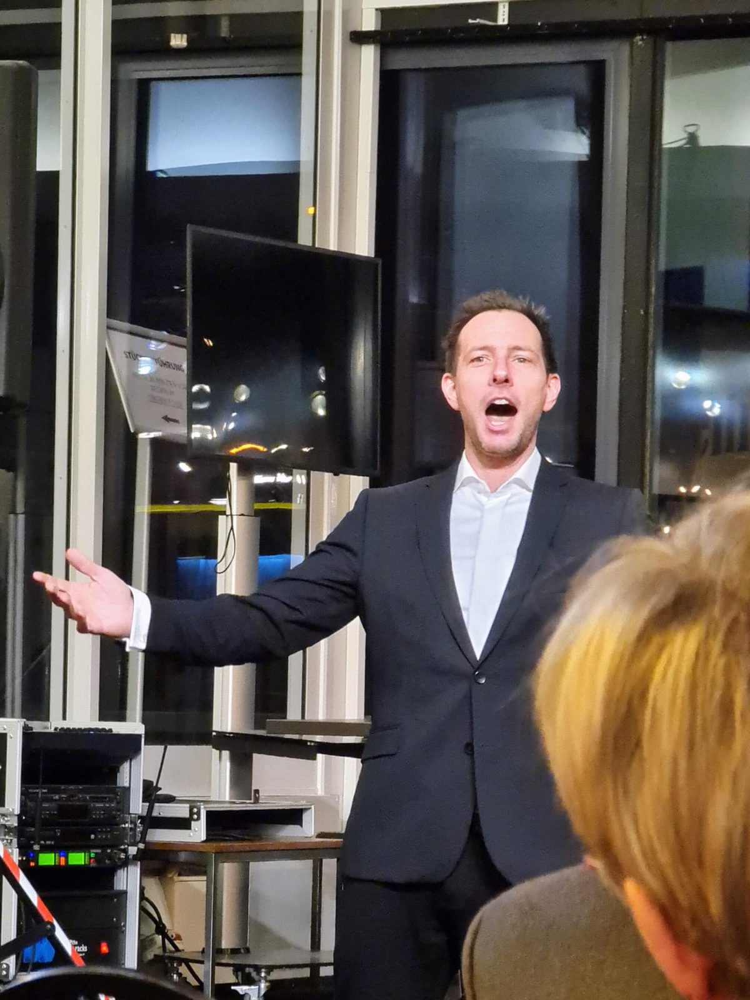
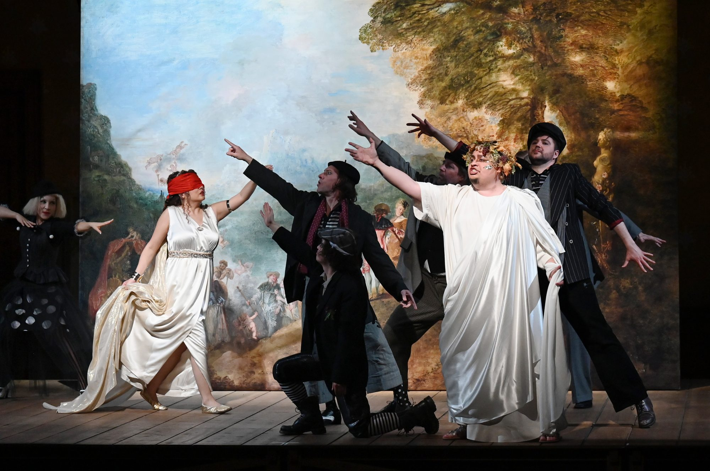
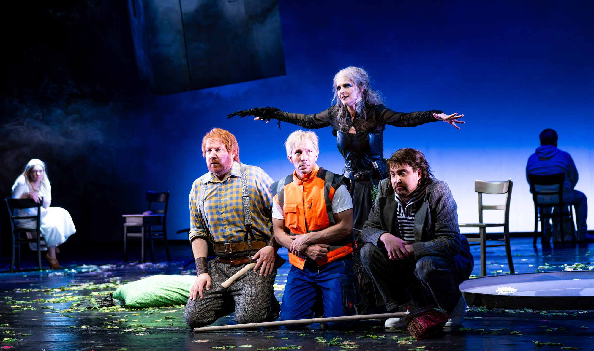
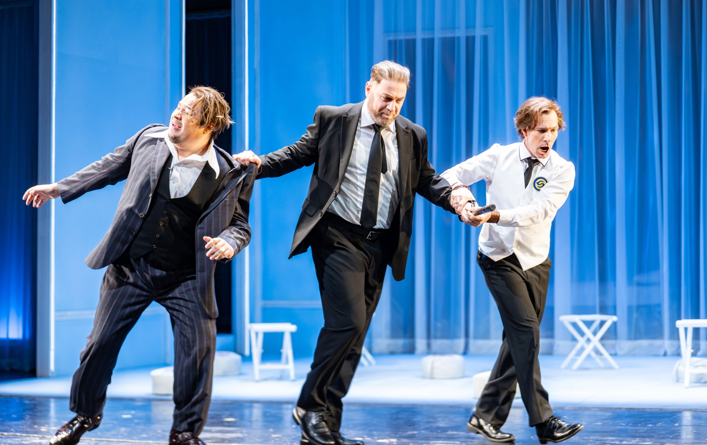

Gallery & Media
Hear and see Derek perform
Stage photographs and live performance recordings. Hear Derek before planning your event.
Video
Watch Derek perform.
This concert excerpt does not yet include lyric captions.
About the concert recording
Derek and a soprano sing Time to Say Goodbye on an outdoor stage at Porta Nigra in Trier, with orchestral accompaniment. The recording is a live concert excerpt with amplified singing. It illustrates Derek’s voice and duet work; it is not a recording of a corporate booking.
Solo Opera Lux event performances use recorded orchestral backing. A soprano can be requested for selected duets, subject to availability.
Photography
Moments from the stage.













Follow Along
Behind the scenes & live clips
Find more of Derek’s stage performances, rehearsals and live clips on Instagram.
@operaluxeventsCheck availability